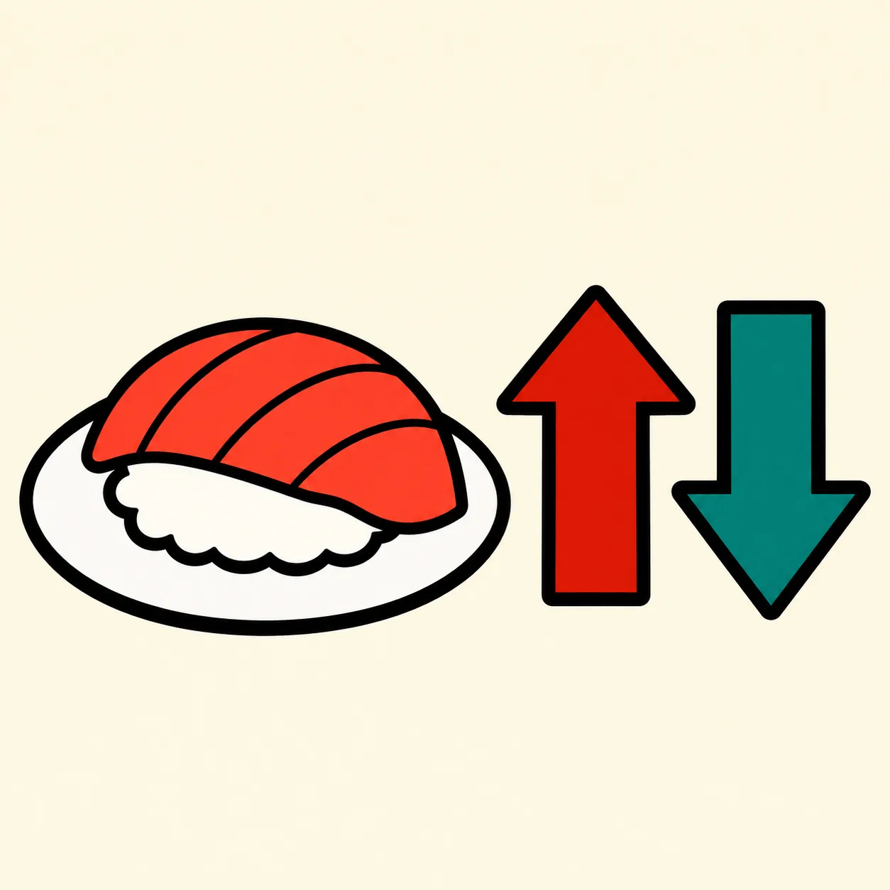

ぜんぶふるさと納税福袋・セールポイント・還元クレジットカード税・制度・NISAスマホ・通信
10本
ネット通販の返品まず返品特約を確認明示がなければ受取日を含む8日以内が原則 2026-11-26・福袋・セールネット通販の返品はいつまで？返品特約と送料を確認する手順福袋2027 カフェ・食べ物9社の期限と中身ミスドは12/11から2026-11-26・福袋・セール福袋2027 カフェ・食べ物9社の期限と中身｜ミスドは12月11日からくら寿司22商品値上げ・34商品値下げ11月27日から2026-11-25・福袋・セール福袋2027まとめ｜本日ビックカメラ抽選締切、ケンタは明日Ankerブラックフライデー2026全25商品の価格表と最大53%OFFの正体11/27 0:00〜12/7 23:59
2026-11-26・福袋・セールネット通販の返品はいつまで？返品特約と送料を確認する手順福袋2027 カフェ・食べ物9社の期限と中身ミスドは12/11から2026-11-26・福袋・セール福袋2027 カフェ・食べ物9社の期限と中身｜ミスドは12月11日からくら寿司22商品値上げ・34商品値下げ11月27日から2026-11-25・福袋・セール福袋2027まとめ｜本日ビックカメラ抽選締切、ケンタは明日Ankerブラックフライデー2026全25商品の価格表と最大53%OFFの正体11/27 0:00〜12/7 23:59 2026-11-25・福袋・セールAnkerブラックフライデー2026の価格表、全25商品と最大53%の正体ヨドバシ福袋2027優遇条件の基準日は終了申込みは11/24 11時から2026-11-20・福袋・セールヨドバシ福袋2027の抽選日程、優遇条件の基準日は終了サンリオ福袋20274,990円全7キャラ共通2026-11-20・福袋・セールサンリオ福袋2027は全7キャラ4,990円で1人交代ゴディバ福袋2027価格据え置き中身が異なる全3種2026-11-20・福袋・セールゴディバ福袋2027は3種類、価格据え置きでも中身は変化Amazonブラックフライデー本番は8日間7つのセール企画2026-11-20・福袋・セールAmazonブラックフライデー2026、7つの企画の買い方Amazonブラックフライデー2026エントリーは今日10時から対象は12/7まで2026-11-19・福袋・セールAmazonブラックフライデー2026、エントリーは今日10時開始
2026-11-25・福袋・セールAnkerブラックフライデー2026の価格表、全25商品と最大53%の正体ヨドバシ福袋2027優遇条件の基準日は終了申込みは11/24 11時から2026-11-20・福袋・セールヨドバシ福袋2027の抽選日程、優遇条件の基準日は終了サンリオ福袋20274,990円全7キャラ共通2026-11-20・福袋・セールサンリオ福袋2027は全7キャラ4,990円で1人交代ゴディバ福袋2027価格据え置き中身が異なる全3種2026-11-20・福袋・セールゴディバ福袋2027は3種類、価格据え置きでも中身は変化Amazonブラックフライデー本番は8日間7つのセール企画2026-11-20・福袋・セールAmazonブラックフライデー2026、7つの企画の買い方Amazonブラックフライデー2026エントリーは今日10時から対象は12/7まで2026-11-19・福袋・セールAmazonブラックフライデー2026、エントリーは今日10時開始
2026-11-26・福袋・セールネット通販の返品はいつまで？返品特約と送料を確認する手順福袋2027 カフェ・食べ物9社の期限と中身ミスドは12/11から2026-11-26・福袋・セール福袋2027 カフェ・食べ物9社の期限と中身｜ミスドは12月11日からくら寿司22商品値上げ・34商品値下げ11月27日から
2026-11-25・福袋・セールくら寿司の値上げは11月27日から、値下げも含む価格改定一覧福袋2027の週次まとめ本日ビックカメラ抽選締切ケンタは明日11/26まで2026-11-25・福袋・セール福袋2027まとめ｜本日ビックカメラ抽選締切、ケンタは明日Ankerブラックフライデー2026全25商品の価格表と最大53%OFFの正体11/27 0:00〜12/7 23:592026-11-25・福袋・セールAnkerブラックフライデー2026の価格表、全25商品と最大53%の正体ヨドバシ福袋2027優遇条件の基準日は終了申込みは11/24 11時から2026-11-20・福袋・セールヨドバシ福袋2027の抽選日程、優遇条件の基準日は終了サンリオ福袋20274,990円全7キャラ共通2026-11-20・福袋・セールサンリオ福袋2027は全7キャラ4,990円で1人交代ゴディバ福袋2027価格据え置き中身が異なる全3種2026-11-20・福袋・セールゴディバ福袋2027は3種類、価格据え置きでも中身は変化Amazonブラックフライデー本番は8日間7つのセール企画2026-11-20・福袋・セールAmazonブラックフライデー2026、7つの企画の買い方Amazonブラックフライデー2026エントリーは今日10時から対象は12/7まで2026-11-19・福袋・セールAmazonブラックフライデー2026、エントリーは今日10時開始